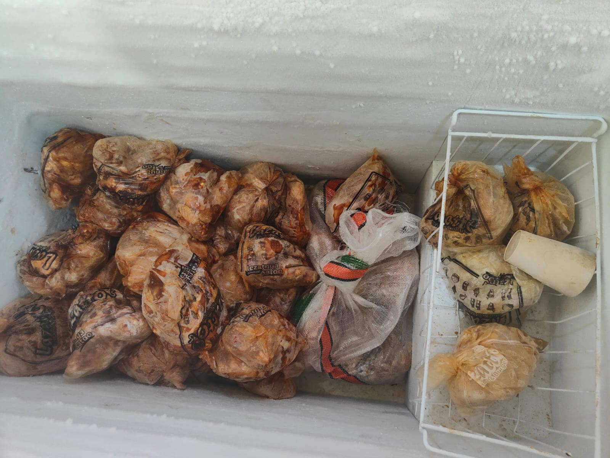
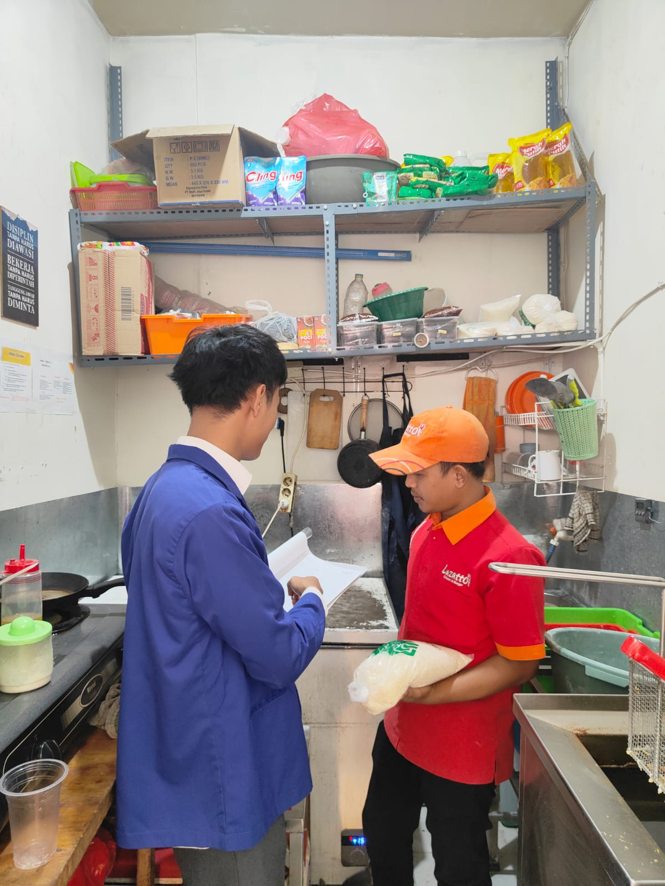
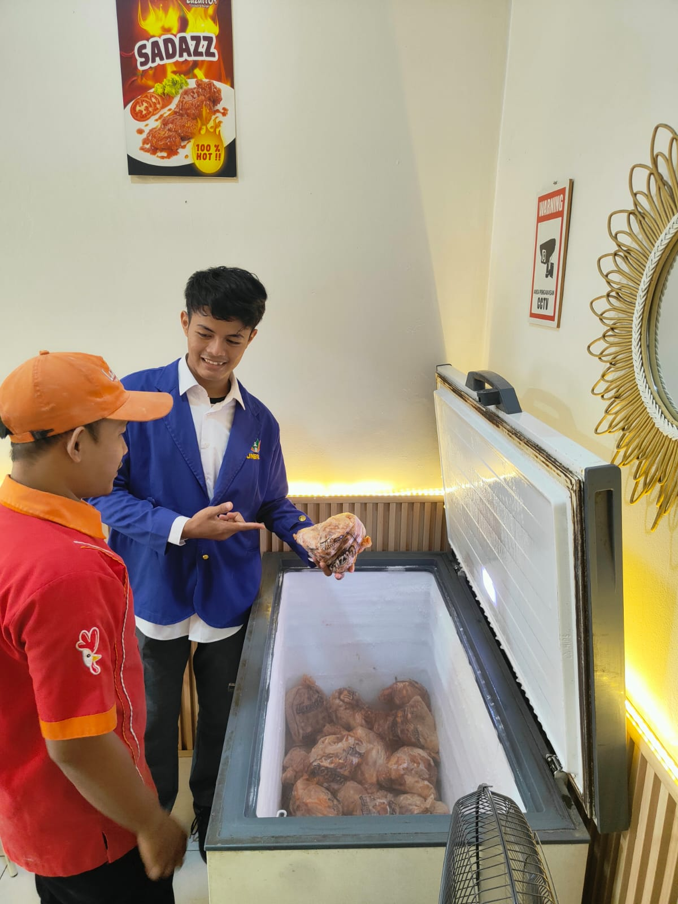
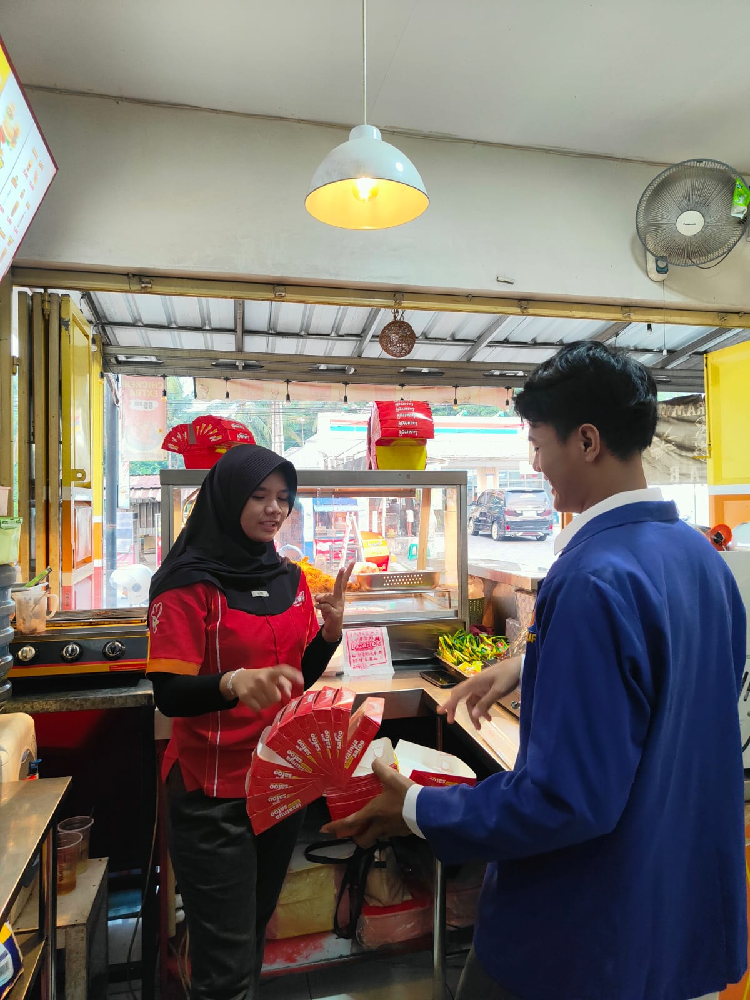
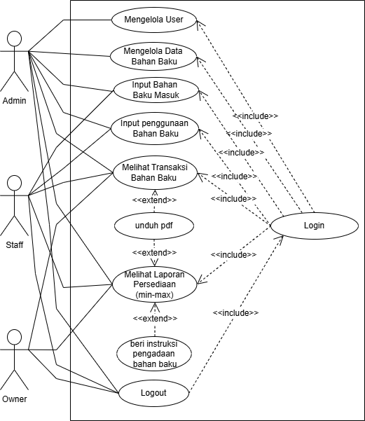
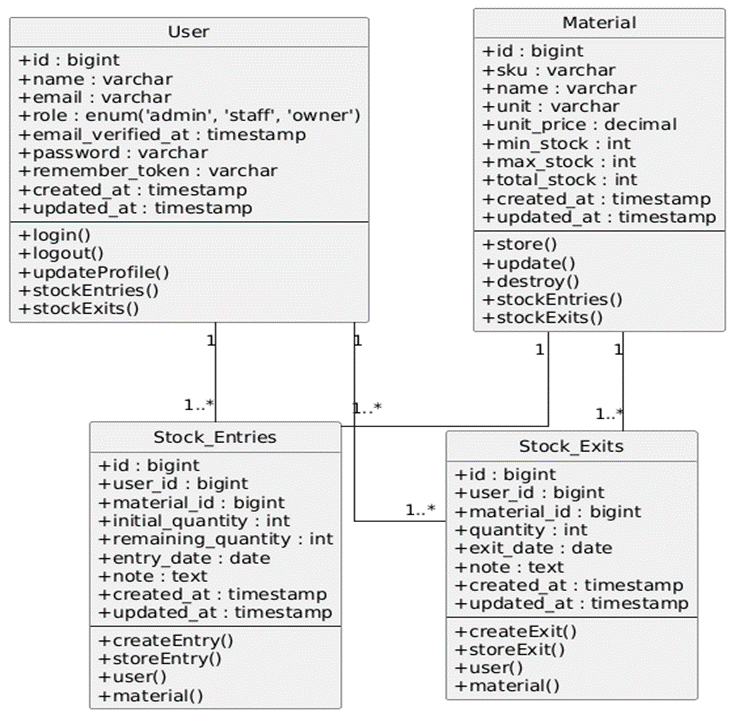

PERANCANGAN SISTEM INFORMASI MANAJEMEN PERSEDIAAN
UNTUK MENGOPTIMALKAN STOK BAHAN BAKU PADA LAZATTO STASIUN WALANTAKA




Latar Belakang & Identifikasi Masalah
Lazatto Stasiun Walantaka adalah usaha kuliner cepat saji dengan tingkat perputaran bahan baku tinggi. Dalam operasionalnya, ditemukan 3 hambatan utama:
- Pencatatan Konvensional: Masih mengandalkan buku catatan fisik & kertas terpisah, rentan kesalahan catat (human error) dan selisih data gudang.
- Ketidakseimbangan Stok: Sering terjadi kondisi Overstock (bahan menumpuk/kadaluwarsa) maupun Understock (kehabisan bahan di tengah produksi).
- Ketiadaan Peringatan Dini: Tidak ada sistem otomatis yang mengingatkan saat stok kritis sebelum kehabisan total.
Untuk mengatasi permasalahan tersebut, dibutuhkan transformasi digital dari pencatatan konvensional menuju sistem terintegrasi:
- Pencatatan Terpusat & Real-Time: Mengintegrasikan arus barang masuk, keluar, dan sisa fisik dalam satu basis data.
- Penerapan Metode Min-Max: Menetapkan batas pengaman (Safety Stock / Reorder Point) dan batas maksimum untuk efisiensi modal persediaan.
- Laporan Eksekutif Presisi: Memudahkan Pimpinan (Owner) memantau evaluasi stok dan riwayat audit secara transparan.
Rumusan Masalah, Tujuan & Batasan Penelitian
- Bagaimana merancang sistem informasi persediaan bahan baku yang terstruktur dan terintegrasi basis data?
- Bagaimana menerapkan metode Min-Max untuk mencegah kelebihan dan kekurangan stok?
- Bagaimana menyajikan laporan persediaan akurat & tepat waktu untuk pengendalian stok?
- Merancang & membangun aplikasi SIMP berbasis web pada Lazatto Stasiun Walantaka.
- Menerapkan algoritma Min-Max beserta fitur Early Warning System untuk kendali stok otomatis.
- Menghasilkan sistem laporan dan rekapitulasi transaksi real-time yang dapat diekspor (PDF).
- Fokus pada pengelolaan bahan baku operasional Lazatto Stasiun Walantaka (tanpa modul kasir penjualan).
- Mencakup master bahan baku, barang masuk, barang keluar/pemakaian, dan laporan stok.
- Pengembangan berbasis Laravel (PHP) dan basis data MySQL.
Metode Pengendalian Persediaan (Min-Max Inventory)
Metode Min-Max mengendalikan stok berdasarkan dua batas kritis yang ditentukan untuk setiap item bahan baku:
- Batas Minimum (Min / Safety Stock): Titik pemicu pemesanan kembali (Reorder Point). Jika stok $\le$ Min, sistem memberi peringatan KRITIS / RE-ORDER.
- Batas Maksimum (Max): Batas kuantitas simpan atas agar gudang tidak mengalami kelebihan stok (Overstock).
- Zona Aman: Kondisi stok berada di antara batas minimum dan maksimum (Min < Stok $\le$ Max).
Metodologi Pengembangan Sistem (SDLC Waterfall)
Pengumpulan data melalui observasi langsung di restoran, wawancara dengan Owner (Ibu Sunaimah S.E), dan studi literatur pengendalian persediaan.
Perancangan sistem berorientasi objek dengan UML (Use Case, Activity, Sequence, Class Diagram) serta pemodelan ERD dan UI/UX.
Pengkodean sistem menggunakan framework Laravel (PHP), database MySQL, dan editor Visual Studio Code.
Pengujian validasi fungsional menyeluruh dengan metode Black Box Testing untuk menjamin akurasi 100% skenario.
Penerapan model Waterfall memberikan pendekatan terstruktur dari analisis kebutuhan hingga implementasi nyata, memastikan peralihan dari sistem pencatatan kertas ke sistem informasi web berjalan mulus tanpa mengganggu operasional dapur Lazatto.
Arsitektur Pengguna & Pembagian Peran Aktor (Use Case)
- Input transaksi Bahan Baku Masuk saat penerimaan pasokan.
- Input transaksi Bahan Baku Keluar untuk pemakaian dapur / rusak.
- Melihat riwayat transaksi dan status stok terkini di lapangan.
- Akses penuh kelola Master Data Bahan Baku & parameter Min-Max.
- Manajemen akun pengguna (Kelola User & Role Access).
- Koreksi / Rekonsiliasi transaksi (Edit & Hapus) serta unduh Laporan PDF.
- Monitoring eksekutif real-time melalui Dashboard Pimpinan.
- Memantau grafik evaluasi pergerakan bahan & status stok kritis.
- Mengunduh dan mencetak Laporan Persediaan PDF untuk instruksi restock.
Perancangan Use Case Diagram & Interaksi Aktor

| Kode | Nama Use Case | Aktor Utama | Relasi & Keterangan |
|---|---|---|---|
| UC-01 | Login | Admin, Staff, Owner | Prasyarat masuk sistem |
| UC-02 | Mengelola User | Admin | <<include>> Login |
| UC-03 | Mengelola Data Bahan Baku | Admin | <<include>> Login |
| UC-04 | Input Bahan Baku Masuk | Admin, Staff | <<include>> Login |
| UC-05 | Input Penggunaan Bahan Baku | Admin, Staff | <<include>> Login |
| UC-06 | Melihat Transaksi Bahan Baku | Admin, Staff, Owner | <<include>> Login |
| UC-07 | Melihat Laporan Persediaan (min-max) | Admin, Owner | <<include>> Login |
| UC-08 | Unduh PDF | Admin, Staff, Owner | <<extend>> Melihat Transaksi & Laporan |
| UC-09 | Beri Instruksi Pengadaan Bahan | Owner | <<extend>> Melihat Laporan Persediaan |
| UC-10 | Logout | Admin, Staff, Owner | Keluar dari sesi sistem |
Activity Diagram Alur Transaksi & Evaluasi Stok Min-Max
Qty Keluar ≤ Stok Aktual. Jika tidak cukup, sistem menolak transaksi.
current_stock pada tabel utama materials.
Stok Akhir ≤ min_stock,
sistem mengaktifkan status KRITIS dan memunculkan peringatan Re-order.
| Jalur Aktor (User) | Jalur Sistem SIMP Lazatto | Jalur Database MySQL |
|---|---|---|
| Input formulir mutasi stok bahan baku | Memeriksa kelengkapan & validitas form | - |
| Konfirmasi simpan transaksi | Menghitung stok baru (+ atau -) |
BEGIN TRANSACTION |
| - | Mengevaluasi parameter Min-Max | UPDATE materials & INSERT mutations |
| Menerima notifikasi status & resi | Menampilkan pembaruan grafik real-time | COMMIT TRANSACTION |
Sequence Diagram & Class Diagram Arsitektur SIMP

- User & Material: Pusat autentikasi & otorisasi pengguna (RBAC), serta
entitas master bahan baku penyimpan parameter batas
min_stock,max_stock, dan evaluasi otomatistotal_stock. - StockEntry & StockExit: Kelas transaksional pencatat arus barang masuk &
keluar yang dilengkapi atribut
notesebagai audit trail akuntabilitas penggunaan barang.
| Nama Class | Atribut Kunci | Method Utama | Relasi (Multiplicity) |
|---|---|---|---|
| User | id, name, email, role ('admin', 'staff',
'owner'), password |
+login()+logout()+stockEntries() |
1 .. 1..* ke Entries & Exits |
| Material | id, sku, name, unit, unit_price,
min_stock, max_stock, total_stock
|
+store()+update()+destroy() |
1 .. 1..* ke Entries & Exits |
| Stock_Entries (*Bahan Masuk*) |
id, user_id (FK), material_id (FK),
initial_quantity, remaining_quantity, entry_date
|
+createEntry()+storeEntry()+user() |
BelongsTo (User & Material) |
| Stock_Exits (*Bahan Keluar*) |
id, user_id (FK), material_id (FK), quantity,
exit_date, note
|
+createExit()+storeExit()+material() |
BelongsTo (User & Material) |
Desain Basis Data Relasional (Normalisasi 3NF)
Data bersumber dari dokumen mentah (bon/faktur). Masih terdapat duplikasi, pengulangan (multivalue), atau atribut gabungan dalam satu kolom.
| no_dokumen | pengguna_sistem | data_barang | qty_transaksi |
|---|---|---|---|
| OLN20260510 | 1.Ahmad Hapendi (Admin) | MYC-14 Mayonaise Curah (Kg) | Masuk: 40 |
| OUT20260511 | 2.Ibadurrahman (Staff) | STE-13 - S-tee (Pcs) | Keluar: 58 |
Memecah atribut gabungan agar setiap kolom bernilai 1 nilai tunggal (atomic) dan tidak ada kolom multivalue berulang.
| id | id_user | nama_user | role | sku | nama_barang | satuan | tipe | qty |
|---|---|---|---|---|---|---|---|---|
| 1 | 1 | Ahmad Hapendi | Admin | MYC-14 | Mayonaise curah | kg | Masuk | 40 |
| 2 | 2 | Ibadurrahman | staff | STE-13 | S-tee | Pcs | Keluar | 58 |
Semua atribut non-kunci bergantung penuh pada Primary Key (PK). Data pengguna dipisah ke tabel
User dan barang ke tabel Material.
| id (PK) | nama | role |
|---|---|---|
| 1 | Ahmad hapendi | Admin |
| 2 | Ibadurrahman | staff |
| id (PK) | sku | name | unit |
|---|---|---|---|
| 1 | MYC-14 | Mayonaise Curah | kg |
| 2 | STE-13 | S-tee | Pcs |
Menghilangkan ketergantungan transitif. Transaksi dipisah tegas ke tabel stock_entries
& stock_exits dengan Foreign Key (FK) terintegrasi.
| id (PK) | no_dokumen | user_id (FK) | material_id (FK) | initial_qty | created_at |
|---|---|---|---|---|---|
| 1 | OLN20260510 | 1 | 1 | 40 | 2026-05-10 |
| id (PK) | no_dokumen | user_id (FK) | material_id (FK) | quantity | created_at |
|---|---|---|---|---|---|
| 1 | OUT20260511 | 2 | 2 | 58 | 2026-05-11 |
Logika Inti Transaksi & Rekonsiliasi Stok Dinamis
Setiap kali transaksi dilakukan, sistem mengeksekusi transaksi database atomik untuk memperbarui angka stok:
total_stock = total_stock + qty_masuk;
// Transaksi Barang Keluar (Validasi Stok)
IF (total_stock >= qty_keluar) {
total_stock = total_stock - qty_keluar;
} ELSE { THROW ERROR "Stok tidak mencukupi!"; }
Perbedaan utama SIMP Lazatto dibanding sistem terdahulu adalah adanya kemampuan Rekonsiliasi Stok Dinamis:
- Apabila Admin melakukan Edit atau Hapus pada riwayat transaksi lama,
sistem otomatis menghitung selisih kuantitas dan merekonsiliasi nilai
total_stockdi database. - Menjamin stok persediaan selalu presisi 100% dan kebal terhadap kesalahan ketik manusia (human error).
Implementasi Antarmuka Aplikasi (SIMP LSW)
Batas minimum aman. Sinyal segera belanja (Reorder).
Batas kapasitas maksimal gudang. Hindari overstock.
Jumlah stok fisik yang tersedia di gudang saat ini.
| SKU | Nama Bahan Baku | Satuan | Batas Min | Batas Max | Stok Aktual | Status |
|---|---|---|---|---|---|---|
| AYM-01 | Ayam Original Lazatto | Ktg | 30 | 60 | 25 | RE-ORDER |
| TPG-02 | Tepung Bumbu Crispy | Kg | 30 | 50 | 45 | AMAN |
| DBE-05 | Daging Burger Beef | Pcs | 30 | 50 | 40 | AMAN |
Mencatat pasokan datang dari supplier dengan nomor faktur, kuantitas, dan keterangan. Stok langsung bertambah secara atomik.
Mencatat konsumsi harian dapur atau bahan rusak. Dilengkapi validasi stok otomatis agar tidak terjadi stok negatif.
Laporan Manajemen & Peringatan Dini (Early Warning System)
Sistem secara otomatis mendeteksi setiap perubahan stok bahan baku dan memberikan indikator visual langsung:
- Badge Kritis (LOW / RE-ORDER): Memandu Admin untuk segera menerbitkan instruksi pembelian sebelum bahan habis total.
- Mencegah Stockout: Menjamin kelancaran pelayanan jam sibuk restoran.
Menyediakan pembuatan laporan otomatis dengan filter periode tanggal untuk audit & evaluasi pimpinan:
- Cetak Laporan Persediaan: Rincian stok awal, masuk, keluar, akhir, serta status kelayakan stok.
- Cetak Riwayat Mutasi: Jurnal logistik lengkap dengan identitas petugas eksekutor.
Pengujian Fungsionalitas Sistem (Black Box Testing)
| No | Fitur yang Diuji | Skenario Pengujian | Hasil Uji | Keterangan |
|---|---|---|---|---|
| 1 | Autentikasi & Multi-Role | Login kredensial valid & pembatasan akses hak menu (Admin/Staff/Owner). | BERHASIL | Keamanan & peran teruji 100% |
| 2 | Master Data & Min-Max | Input/Edit/Hapus bahan baku & penetapan batas kritis Min-Max. | BERHASIL | Parameter tersimpan valid |
| 3 | Transaksi Masuk & Keluar | Pencatatan barang masuk & keluar beserta validasi stok mencukupi. | BERHASIL | Kalkulasi stok akurat |
| 4 | Rekonsiliasi Stok Dinamis | Koreksi / pembatalan transaksi oleh Admin pada riwayat lama. | BERHASIL | Otomatis hitung ulang presisi |
| 5 | Laporan & Ekspor PDF | Filter rentang waktu dan generasi dokumen resmi format PDF. | BERHASIL | Dokumen tercetak sempurna |
Kesimpulan & Saran Pengembangan
- Otomatisasi Terpusat: SIMP LSW berbasis web berhasil mengintegrasikan dan mempercepat pencatatan stok di Lazatto Stasiun Walantaka.
- Efektivitas Min-Max: Algoritma Min-Max dan Early Warning System terbukti efektif mencegah overstock maupun kehabisan bahan baku.
- Integritas Data Tinggi: Ekspor laporan PDF dan fitur rekonsiliasi stok dinamis menjamin akurasi data serta meminimalisir human error.
- Notifikasi Otomatis WhatsApp API: Mengirim pesan peringatan restock langsung ke ponsel manajemen saat stok menyentuh batas kritis.
- Pengembangan Aplikasi Mobile (Android/iOS): Mempermudah Owner memantau fluktuasi grafik persediaan secara fleksibel di mana saja.
- Integrasi Modul Forecasting AI: Menambahkan analisis prediktif kebutuhan bahan baku berdasarkan tren histori konsumsi masa lalu.
TERIMA KASIH
"Puji syukur kepada Allah SWT. Terima kasih yang sebesar-besarnya kepada Yang Terhormat Dewan Penguji atas segala evaluasi, bimbingan, dan masukan berharga, serta Dosen Pembimbing (Bpk. Edy Rakhmat, M.Kom. & Bpk. Andi Usri Usman, S.Kom., M.Kom.) atas arahan tiada henti hingga skripsi ini dapat terselesaikan dengan baik."